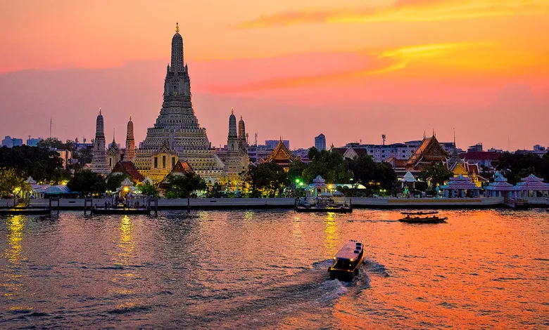

Bangkok’un muhteşem mimarisine sahip olan Wat Arun, Şafak Tapınağı olarak da bilinmektedir. 70 metre yüksekliğindeki bu tapınak, Budist kültüründe dünyanın merkezi olarak kabul edilen Meru Dağı’nı temsil etmektedir.
Şafak Tapınağı, 1768 yılında Kral Taksin tarafından tasarlanmıştır. Kral Taksin, Birmanya ordusu tarafından ele geçirilen Ayutthaya’dan çıkmak için savaştıktan sonra bu tapınağa şafak sökerken gelmiştir. Daha sonra tapınağı restore ettirmiş ve adını Şafak Tapınağı koymuştur. 1824 - 1851 yılları arasında Rama III ise tapınağı genişleterek, camla ve Çin porselenler ile kaplatmıştır. Tapınağın üzerindeki bu cam parçaları ve Çin porselenleri ince ince yapıştırılarak dekore edilmiştir. Tapınağın bu şekilde kaplı olması, şafakta yanında bulunduğu nehrin üstüne muhteşem bir şekilde yansımaktadır. Ziyaretçiler dilerlerse tapınağın ortasındaki kuleye tırmanabilmektedir.
Şafak Tapınağı, haftanın her günü saat 8.00 ile 17.30 arasında ziyaretçilere açıktır. Tapınağa giriş kişi başı 100 bahttır. Tapınağa ulaşmak için ise en kısa yol teknedir. Turistler, Chao Phraya ekspres trenine binerek tapınağa ulaşabilmektedir. Şafak Tapınağı Budistler için kutsal bir yer olduğu için ziyaret esnasında omuzları ve dizleri kapatan uzun kıyafetlerin giyilmesi gerekmektedir.